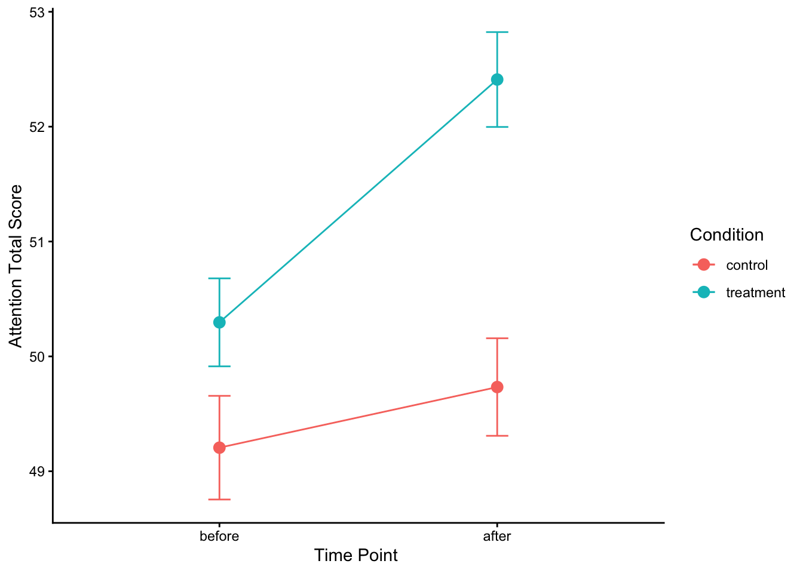

library(tidyverse)
library(here)
library(janitor)
library(jtools); library(sjPlot) # Regression output
library(gt); library(gtsummary) # Tables
library(interactions); library(emmeans) # Plot interaction
library(praise); library(cowsay); library(beepr) # FUNLab Week 10 - Evaluating the Results of an Experiment
PSY 150
Outline
- Demonstrate how random assignment works using the PSY 150 class survey data
- Introduce example experiment: Pre-post study design
- Check covariate balance across randomly assigned “control” & “treatment” groups
- Estimate regression model to evaluate findings of the experiment
- Group lab activity - “Break the experiment”
Disclaimer:
The data used in this lab for the initial practice exercise and group activity have been simulated to parallel the analyses & results for a series of published experiments.
Although the data is simulated to be realistic, results should not be interpreted literally as simulated data necessarily includes assumptions that omit complexity found in real data that is reported by a sample of participants.
Lab preparation - Load packages
Read in your survey response data from 1st week of PSY150
- Read in the data file named
psy150_survey_data.csv - Specify categorical variables as
factors - Change variable
wake_up_timefrom afactorto anumericvariable - Re-order
levelsand changelabelsfor factorrisk_pref - Randomly assign class observations to
controlandtreatmentgroups of equal sizes
set.seed(2025)
psy150_data <- read_csv(here("data", "psy150_survey_data.csv")) %>%
mutate(across(c(fav_season:birth_month, risk_pref, study_sound), as.factor)) %>%
mutate(wake_up_time = factor(wake_up_time,
levels = c("6 am", "7 am", "8 am", "9 am", "10 am", "11 am", "12 pm", "1 pm (or later)"))) %>%
mutate(wake_up_time = as.numeric(wake_up_time)+5) %>%
mutate(risk_pref = factor(risk_pref,
levels = c("A sure $10", "A 50% chance to win $24"),
labels = c("Low Risk", "High Risk"))) %>%
mutate(random_groups = sample(rep(c("control", "treatment"), each = n()/2)))Do the randomly assigned groups have covariate balance?
Covariate balance table for PSY150 class survey data
psy150_data %>%
select(random_groups, height, pets, fav_number,
sibling_number, dominant_hand,
risk_pref, wake_up_time) %>%
tbl_summary(
by = random_groups,
type = list(wake_up_time ~ "continuous"),
statistic = list(all_continuous() ~ "{mean} ({sd})")) %>%
modify_header(label ~ "**Variable**") %>%
modify_spanning_header(c("stat_1", "stat_2") ~ "**Randomly Assigned Groups**") %>%
add_p(list(all_continuous() ~ "t.test"))| Variable |
Randomly Assigned Groups
|
p-value2 | |
|---|---|---|---|
| control N = 151 |
treatment N = 151 |
||
| height | 64.7 (3.2) | 66.1 (5.1) | 0.4 |
| pets | >0.9 | ||
| No Pets | 2 (13%) | 2 (13%) | |
| Pets | 13 (87%) | 13 (87%) | |
| fav_number | 5.47 (2.23) | 5.93 (2.25) | 0.6 |
| sibling_number | 0.7 | ||
| 0 | 2 (13%) | 1 (6.7%) | |
| 1 | 6 (40%) | 7 (47%) | |
| 2 | 4 (27%) | 1 (6.7%) | |
| 3 | 2 (13%) | 4 (27%) | |
| 4 | 0 (0%) | 1 (6.7%) | |
| 5 | 1 (6.7%) | 1 (6.7%) | |
| dominant_hand | >0.9 | ||
| Both (Ambidextrous) | 0 (0%) | 1 (6.7%) | |
| Right | 15 (100%) | 14 (93%) | |
| risk_pref | 0.028 | ||
| Low Risk | 4 (27%) | 10 (67%) | |
| High Risk | 11 (73%) | 5 (33%) | |
| wake_up_time | 8.53 (1.51) | 8.40 (1.55) | 0.8 |
| 1 Mean (SD); n (%) | |||
| 2 Welch Two Sample t-test; Fisher’s exact test; Pearson’s Chi-squared test | |||
Analyzing experimental data:
Practice example: A Pre-Post Experiment Design (“Difference-in-Difference”)
“An Environmental Intervention to Restore Attention in Women With Newly Diagnosed Breast Cancer” Cimprich & Ronis (2003)
Summary: A sample of 157 women with breast cancer participated in the study with 6 attention measures collected before scheduled surgeries. After their surgery they participated in a “nature exposure” intervention and attention was re-tested.
Read in the simulated ‘replication’ data
nature_data <- read_csv(here("data", "nature_simdata_Cimprich2003_v7.csv")) %>%
mutate(
time_point = factor(time_point, levels = c("before","after")),
nre_interv = factor(nre_interv, levels = c("control","treatment")))Take a look at balance across pre-treatment covariates
- Identify continuous and categorical covariates
- Look for balance/imbalance across intervention groups
- Evaluate results of difference tests (
p-value)
nature_data %>%
select(nre_interv, age, education_yrs,
race, marital_status, comorbid, surgery_extent, disease_stage,
attention_composite) %>%
tbl_summary(
by = nre_interv,
statistic = list(all_continuous() ~ "{mean} ({sd})")) %>%
modify_header(label ~ "**Variable**") %>%
modify_spanning_header(c("stat_1", "stat_2") ~ "**Experimental Conditions**") %>%
add_p(list(all_continuous() ~ "t.test"))| Variable |
Experimental Conditions
|
p-value2 | |
|---|---|---|---|
| control N = 1481 |
treatment N = 1661 |
||
| age | 54 (18) | 57 (19) | 0.13 |
| education_yrs | 15.3 (3.4) | 14.7 (3.3) | 0.12 |
| race | 0.049 | ||
| Caucasian | 124 (84%) | 124 (75%) | |
| Non-Caucasian | 24 (16%) | 42 (25%) | |
| marital_status | 0.9 | ||
| Married | 86 (58%) | 98 (59%) | |
| Single | 62 (42%) | 68 (41%) | |
| comorbid | 56 (38%) | 86 (52%) | 0.013 |
| surgery_extent | >0.9 | ||
| Lumpectomy | 80 (54%) | 90 (54%) | |
| Mastectomy | 68 (46%) | 76 (46%) | |
| disease_stage | 0.086 | ||
| 0 | 6 (4.1%) | 16 (9.6%) | |
| 1 | 88 (59%) | 102 (61%) | |
| 2 | 54 (36%) | 48 (29%) | |
| attention_composite | 49.4 (3.5) | 51.3 (3.5) | <0.001 |
| 1 Mean (SD); n (%) | |||
| 2 Welch Two Sample t-test; Pearson’s Chi-squared test | |||
Model 1: Look at pre-treatment differences by intervention group
time_point (0 = before, 1 = after): Pre-treatment / Post-treatment nre_interv (0 = control, 1 = treatment): Outdoor Activity Intervention
pre_treat_data <- nature_data %>%
filter(time_point == "before")
m1_pre_treat <- lm(attention_composite ~ nre_interv,
data = pre_treat_data)
tab_model(m1_pre_treat,
digits = 3, show.se = TRUE,
show.ci = FALSE, show.r2 = FALSE)| attention composite | |||
| Predictors | Estimates | std. Error | p |
| (Intercept) | 49.100 | 0.394 | <0.001 |
| nre interv [treatment] | 1.164 | 0.527 | 0.029 |
| Observations | 157 | ||
Model 2: Look at post-treatment differences by intervention group
post_treat_data <- nature_data %>%
filter(time_point == "after")
m2_post_treat <- lm(attention_composite ~ nre_interv,
data = post_treat_data)
tab_model(m2_post_treat,
digits = 3, show.se = TRUE,
show.ci = FALSE, show.r2 = FALSE)| attention composite | |||
| Predictors | Estimates | std. Error | p |
| (Intercept) | 49.644 | 0.402 | <0.001 |
| nre interv [treatment] | 2.755 | 0.570 | <0.001 |
| Observations | 157 | ||
Finding the “Difference-in-Difference”
Regression with interaction effects
- Main effects:
nre_intervandtime_point - Interaction effect:
nre_interv*time_point

Model 3: Estimate pre-post regression with interaction term
m3_interact <- lm(attention_composite ~
nre_interv +
time_point +
nre_interv*time_point,
data = nature_data)
tab_model(m3_interact,
digits = 3, show.se = TRUE,
show.ci = FALSE, show.r2 = FALSE)| attention composite | |||
| Predictors | Estimates | std. Error | p |
| (Intercept) | 49.100 | 0.413 | <0.001 |
| nre interv [treatment] | 1.164 | 0.551 | 0.036 |
| time point [after] | 0.545 | 0.565 | 0.336 |
| nre interv [treatment] × time point [after] |
1.592 | 0.776 | 0.041 |
| Observations | 314 | ||
Model 4: Add control variables to test sensitivity of treatment effect
- Are there significant differences for covariate control variable?
- Do the main effects and interaction term change after adding the controls?
m4_controls <- lm(attention_composite ~
nre_interv +
time_point +
nre_interv*time_point +
race + comorbid + surgery_extent + disease_stage, # Controls
data = nature_data)
tab_model(m4_controls,
digits = 3, show.se = TRUE,
show.ci = FALSE, show.r2 = FALSE)| attention composite | |||
| Predictors | Estimates | std. Error | p |
| (Intercept) | 49.555 | 0.653 | <0.001 |
| nre interv [treatment] | 1.091 | 0.562 | 0.053 |
| time point [after] | 0.528 | 0.570 | 0.355 |
| race [Non-Caucasian] | 0.203 | 0.492 | 0.680 |
| comorbid [Yes] | 0.076 | 0.401 | 0.849 |
| surgery extent [Mastectomy] |
-0.123 | 0.396 | 0.757 |
| disease stage | -0.341 | 0.348 | 0.328 |
| nre interv [treatment] × time point [after] |
1.586 | 0.780 | 0.043 |
| Observations | 314 | ||
Create a simple slopes plot to see the interaction effect
emm <- emmeans(m4_controls, ~ nre_interv * time_point)
emm_df <- as.data.frame(emm) %>%
mutate(ymin = emmean - SE,
ymax = emmean + SE)
ggplot(emm_df,
aes(x = time_point, y = emmean, group = nre_interv, color = nre_interv)) +
geom_line() +
geom_point(size = 3) +
geom_errorbar(aes(ymin = ymin, ymax = ymax), width = 0.08) +
labs(x = "Time Point ",
y = "Attention Total Score",
color = "Condition") +
theme_classic()
praise("${EXCLAMATION}!- You've ${created} something ${adjective}!"); beep(1)[1] "OLE!- You've initiated something well-made!"